Operating Documentation
Direction 5114043-800, Rev# 9
LightSpeed 3.X Service Methods (Advanced)
Operating Documentation |
| Last Revised: | 29 August 2005 |
This LFC (Load from Cold) procedure supports the following GRE/Xtream Host Console systems:
HiSpeed QX/i
LightSpeed 1.X
LightSpeed 2.X
LightSpeed 3.X (4- and 8-Slice)
LightSpeed 4.X (16-Slice)
LightSpeed 5.X Pro16 (80kw & 100kW)
LightSpeed 5.X RT
LightSpeed 5.X 16, Ultra, Plus
The LFC requires a total of five (5) CD-ROMs. See Section 2.1.2.)
Console Operating System (OS) software - loaded on HP Host Computer and DARC Node.
Host Applications software (2 CD set) - loaded on HP Host Computer.
DARC Applications software - loaded on HP Host Computer.
BIOS Floppy Disk 1.13 for HP xw8000 computers
Tube Usage Patch
5134309 – Operating System Disk
Version - Linux 4.3.13
5134306, 5134307 - 05MW14.5 Q2 2005 Release Application Disk #1, Disk #2
5138295 – BIOS 1.13 Floppy for HP xw8000 computers
5134308 - DARC Applications
Version 05MW14.5
5142649 - Tube Usage Patch
5140558 – IIP Upgrade Patch CD
xxxxxxx - CT Number Fix Patch
Verify the Peripheral Tower DVD RAM power is applied.
Verify the Peripheral Tower terminator LED is lit (located at the rear).
Verify the HP Host Computer DVD ROM drive does not have a CD in it.
Verify and record specific system hardware configuration.
Open a shell.
Type: cat /usr/g/config/INFO<Enter>
Record screen information in Console Information Sheets. For an example output, see Example Config/INFO Output.
Perform Save System State; save Protocols if applicable. See Section 3.2.
Record Autovoice Volume control settings (<ALT-F3> by Toolchest, upper right corner).
| Potential for Loss of Patient Data. | |
| This procedure will overwrite existing data. | |
| Before performing this procedure, ensure that the Archive and Network Queues are empty of patient data. If they are not, DO NOT proceed until it can be verified that all patient data has been archived. |
| NOTE: | This section is a checklist only. The actual procedures start in Section 3.2. |
| Do not use <ctrl - alt - delete> to reboot the host computer. This technique will NOT reboot all console subsystems. | |
Save System State (be sure save any customer reformat files that might exist).
Verify and record specific system hardware configuration inConsole Information Sheets.
(For Upgrade from GOC1 or GOC2 only) Install GRE/Xtream Console.
(For HP xw8000 only) Perform BIOS Load and Setup procedure.
Install the Operating System (OS) on the HP Host Computer (GEHC2 or iGEHC2).
Select [OK] by pressing the <Enter> key and immediately remove the OS CD.
Install the Applications SW on the HP Host Computer - [Yes] to autorun. After Disk1 load, Insert Disk 2, select [OK]
Select [Load] and [Yes] to InfoFile (restore the System State) then, select [Accept] .
Select [Yes] to reboot and remove Applications CD from HP Host PC.
Set the time and date.
Modify the DARC BIOS to allow OS load from PC to DARC
Install the OS on the DARC Node.
Install the DARC Applications SW on the HP Host PC, type as required.
Change DARC BIOS back to original settings.
Load Tube Usage Patch.
Configure HIPAA system access
Restore System State.
Install IIP Patch Software.
Perform the Retro Recon Sanity Check.
Perform the Flash Download Update.
Install the Software Options.
Edit Gantry Revolutions (Scan Usage Work-Around).
Reboot the system.
Save System State.
Perform Scout, Helical, and Axial Sanity Scans.
root:#bigguy
ctuser:4$apps
Refer to General Information for the following “how to” procedures that may be useful during a software load:
Remote Shell - Check Internal Network
HP Computer CD-ROM - Mount and Unmount Process
Peripheral Tower DVD - Mount and Unmount Process
Peripheral Tower DVD - Initializing a DVD
Peripheral Tower MOD - Mount and Unmount Process
For IRIX systems, follow the instructions in Section 3.2.1.
For Linux systems, follow the instructions in Section 3.2.2.
Two “Save System State” procedures must be performed:
| |
| NOTE: | The original “Save System State” MOD will be used only if the customer wants to revert back to the original IRIX-based SW. |
Do the following steps before powering down the IRIX console and installing the GRE/Xtream console.
Save system state to an MOD on the IRIX console before installing the new GRE/Xtream console.
Insert the MOD into the Peripheral Tower MOD drive.
Select: [Service Desktop] .
If reloading software, select: [UTILITIES] . If upgrading from earlier version software, select: [PM] .
Select: [System State] .
Select [ALL] to save all data.
Click [SAVE] .
If applicable, click [OK] when the following message appears: System State Media Status: Please insert a DVD or MOD into the drive and press Save again.
When completed select [DISMISS] .
For the original MOD, label the MOD as “Pre 05MW14.5 Q2 2005 Release”.
Repeat Steps a-j, for the second “Save System State”, using a new MOD, and label as “05MW14.5 Q2 2005 Release”.
Close the Service Desktop window in the upper left corner of the screen.
Write down all of the system INFO information on the reconfig screens, including the network information (use the appropriate information sheet, found in GRE/Xtream Operator Console Information Sheets). During the Load from Cold on the new console, you cannot restore the INFO file during the load.
If the console has Connect Pro installed, write down the information when you run installhisris so it can be entered on the new console when installing the Connect Pro option.
Record gantry revolutions:
Launch Common Service Desktop
Capture gantry revs located in upper right corner.
This value will be entered after Restore System State.
Modify System State MOD
Insert System State MOD into the drive.
Open a shell and login as ROOT
Type: mountMOD
Type: cd /MOD/service_mod_data/system_state
Type: chmod 666 *bb .epdlog
(change permissions on tube usage & edit patient data files)
Type: rm -f *.stats
(removes runtime stats on non-HPOWER systems)
Type: rm -f iipBackupGen2.tar.Z
(removes IIP “tar ball” files à not used by new IIP)
Type: rm -f Voxtool.prefs
(removes Voxtool preferences ⇒ new Voxtool application uses new set of preferences)
Type: rm -f smartscore.tar.gz
(removes SmartScore files ⇒ SmartScore not applicable to PathFinder / not supported by PF sw)
Type: rm -f vxtlBackup.tar
(removes VoxTool files ⇒ new Voxtool application uses new set of files)
Remove VoxtoolPrefs/* and CT_PerfusionPrefs/* files
Type: rm -f movierx*
(removes Direct 3D preferences that the customer can not edit)
Type: rm -f *.flm
Type: rm -f *.pro
Type: rm -f *.vrp
Type: rm -f *.adv
Type: rm -f *.adv.research
Type: rm -f *.disp
Type: rm -f *.disp.research
Type: cd
Type: unmountMOD
Two “Save System State” procedures must be performed:
| |
| NOTE: | The original “Save System State” will be used only if the customer wants to revert back to the original SW. |
Perform these steps before powering down your current GOC2 or GOC3 Console:
Insert the DVD into the Peripheral Tower DVD drive.
Select: [Service Desktop] .
If reloading software, select: [UTILITIES] . If upgrading from earlier version software, select: [PM] .
Select: [System State] .
Select [ALL] to save all data.
Click [SAVE] .
If applicable, click [OK] when the following message appears: System State Media Status: Please insert a DVD or MOD into the drive and press Save again.
When completed select [DISMISS] .
Save all reformat / recon protocols.
For the original DVD, label the DVD as “Pre 05MW14.5 Q2 2005 Release”.
Repeat Steps 1-9, for the second “Save System State”, using a new DVD, and label as “05MW14.5 Q2 2005 Release”.
Close the Service Desktop window in the upper left corner of the screen.
Sites performing the next sub-section should not remove the DVD from the Peripheral Tower DVD RAM drive.
This section only applies to GOC1 (IRIX) and GOC2 (Linux-Pegaus) Host Console upgrades .
Power down the GOC1 or GOC2 console.
Install the new GRE/Xtream (Linux) console.
You will be using your existing SCIM/Keyboard, monitors and mouse, unless you received a new SCIM or mouse. You will receive a new trackball that must be used on the new console. Your old trackball will no longer work. Install the new tower that has a DVD ROM drive installed and an MOD drive installed. When you power up the GRE/Xtream (Linux) console, make sure the power to the tower has been turned on (Switch on front of the tower) and the new trackball is installed. It plugs in to a cable near the connections for the keyboard and mouse. The extension cable for the trackball is already connected to the USB port at the rear of the HP computer.
See the Installation Instructions that came with the new console.
| After installing the (new) hardware and before performing the software load, you must load and set up the HP xw8000 PC BIOS, or verify the xw8200 PC BIOS. | |
(For Systems with an HP xw8200 PC)
After saving system
state, verify the current BIOS settings (click on the PDF icon,  ,
to view BIOS screen shots). After the BIOS settings have been verified, proceed
to Section 3.5 (LFC).
,
to view BIOS screen shots). After the BIOS settings have been verified, proceed
to Section 3.5 (LFC).
(For Systems with an HP xw8000 PC) After saving system state, prepare to load HP xw8000 PC BIOS (JQ.W1.13US) and setup the BIOS. Follow all of the procedures in this section.
Determine PC BIOS version
Reboot the system
At the hp invent screen, press <F2.>
Use the arrow keys to select Main.
View BIOS Version, and verify it is 1.13 or greater.
If it is not, proceed with Step 2 (below).
If it is, skip to Step 6 of this section.
Insert BIOS floppy disk in PC floppy drive.
Reboot PC (“pink” window-shutdown).
When the BIOS Setup Utility screen is displayed, select Option A, Flash BIOS by typing A and pressing the <Enter> key.
The BIOS will begin to load from floppy. Allow the BIOS to load completely.
Reboot, press any key.
The “Press any key to reboot” message will be displayed when the BIOS-flashing is complete.
Remove BIOS floppy disk from the drive to prevent boot-up from floppy.
Press <F2> to interrupt the boot-up sequence to edit BIOS settings.
Changes can be made by cursor-selecting the parameter, then using the “+” and “-“ buttons to toggle its value.
The Main setup screen is shown in Illustration 1. Confirm that all parameters are set as shown.
Illustration 1: Main Setup Screen
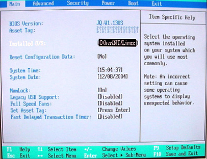
From the Main Menu screen, use arrow key to select (move to) Advanced to view the Advanced setup screens.
The Advanced BIOS setup screen is shown below. The BIOS components that will be updated in the next steps are highlighted.

From the Advanced Menu screen, use arrow key to select (move to) Processors.
Set all Processors parameters as shown below.

When Processors setup is complete, press <Esc> key to return to the Advanced menu.
From the Advanced Menu screen, use arrow key to select (move to) PCI Slot 1.
Set all Advanced-PCI Slot 1 parameters as shown below.
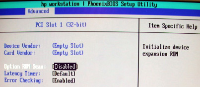
When Advanced-PCI Slot 1 setup is complete, press <Esc> key to return to the Advanced menu.
From the Advanced Menu screen, use arrow key to select (move to) PCI Slot 2.
Set all Advanced-PCI Slot 2 parameters as shown below.
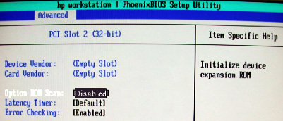
When Advanced-PCI Slot 2 setup is complete, press <Esc> key to return to the Advanced menu.
From the Advanced Menu screen, use arrow key to select (move to) PCI Slot 3.
(For Adaptec) Set all Advanced-PCI Slot 3 parameters as shown below.
(For QLogic) Device Vendor and Card Vendor will read 1077H. Set all Advanced-PCI Slot 3 parameters as shown below, EXCEPT Option ROM Scan, which should be set to [Enabled].
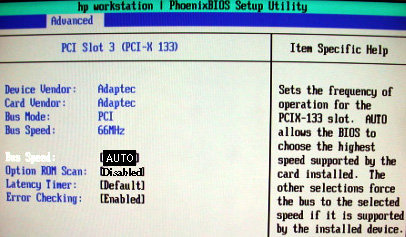
When Advanced-PCI Slot 3 setup is complete, press the <Esc> key to return to the Advanced menu.
From the Advanced Menu screen, use arrow key to select (move to) PCI Slot 4.
Set all Advanced-PCI Slot 4 parameters as shown below.

When Advanced-PCI Slot 4 setup is complete, press <Esc> key to return to the Advanced menu.
From the Advanced Menu screen, use arrow key to select (move to) PCI Slot 5.
Set all Advanced-PCI Slot 5 parameters as shown below.
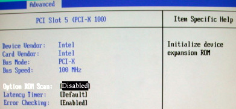
When Advanced-PCI Slot 5 setup is complete, press the <Esc> key to return to the Advanced menu.
From the Main Menu screen (shown below), use arrow key (move) to select Power.
Setup POWER as shown below.

When POWER setup is complete, press the <Esc> key to return to the Main menu.
Setup BOOT: From the Main Menu screen, use arrow key to select (move to) Boot.
Set all Boot parameters as shown below.
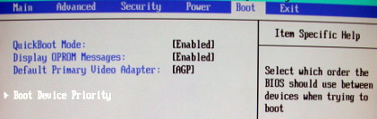
Arrow-select (move) to Boot Device Priority and press the <Enter> key.
Setup BOOT DEVICE PRIORITY as shown below.

| NOTE: | The <!> key disables/enables devices. |
When BOOT DEVICE PRIORITY setup is complete, press the <Esc> key to return to the Main menu.
Save BIOS settings as shown in the two figures below.
From Main menu, arrow to (move to) EXIT.
Select Exit Saving Changes and <Enter> key.
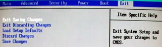
Select [YES] and <Enter> key to “Save configuration changes and exit now”.

Host BIOS setup is complete.
Use the procedures in this section to perform a LFC from a group of CD-ROMs.
| NOTE: | System State SAVE must be performed before shutting down apps (Application Software). |
Verify the System State was saved.
Remove the GRE/Xtrem Operator Console's front cover.
Insert the OS Disk into the DVD-ROM drive on the HP Host Computer. See the following illustration.

-
If Applications are up, shut down the machine by clicking the red [Shutdown] icon in the upper left corner of the screen -or- Power OFF the console.
The following options appear:
Attention:
Shutdown the system?
Logout User (this appears only if HIPAA Present was set to [On] during the Load process)
Restart
Shutdown
Select [Restart] then [OK] to shut down and restart the system, or if you powered OFF the console, wait 30 seconds to allow the disk drive to settle then power ON the Console.
As the computer restarts, the booting process messages appear.
After the booting process completes, the boot: prompt appears.
At the boot prompt, type the following depending on system type:
Type: GEHC2 Enter (for English Keyboard only)
or: iGEHC2 Enter (international command only)
| NOTE: | The Console Operating System load takes approximately 18 minutes. If the boot: prompt does not appear, then either the DVD-ROM is bad or the Console Operating System DVD-ROM is not installed in the drive. Typing GEHC will result in both scan and display being on one monitor and require a LFC. |
After the OS is loaded, a red button appears and displays [OK] . Press <ENTER>, and then remove the OS disk, when it ejects.
The HP Host Computer reboots. Do not insert the Application Disk #1 into the HP Host Computer until the system reboots and the [root@localhost] window appears, displaying the [root@localhost root]# prompt.
Separate Application Software packages (for the HP Host Computer and the DARC Node) are loaded via CD-ROMs onto the HP Host Computer.
| FAILURE TO INSTALL THE CORRECT APPLICATION SOFTWARE AND SELECT THE CORRECT SYSTEM DAS HARDWARE CONFIGURATION WILL RESULT IN SYSTEM DOWNTIME AND DCB CIRCUIT BOARD REPLACEMENT. (THIS FAILURE WILL OCCUR AFTER THE FLASH DOWNLOAD PROCEDURE FLASHES THE FIRMWARE.) | |
| NOTE: | For platform-specific software versions, see Section 2.1.2. |
After the system reboots and the window appears with the [root@localhost root]# prompt, insert the Application Disk #1 CD-ROM into the DVD-ROM drive on the HP Host PC. See the illustration below.
After approximately one minute a pop-up box appears, asking:
Do you wish to run /mnt/cdrom1/autorun?
| NOTE: | If the message does not appear after two minutes, type the following
then wait approximately one minute for the pop-up box to appear. mount /mnt/cdrom1<ENTER> /mnt/cdrom1/autorun<ENTER> |
Click [YES] . After 2-3 minutes, a pink pop-up box appears with:
Install of cd 1 completed successfully! Insert disk 2 to continue applications load.
Remove Applications Disk #1 and insert the Application Disk #2 CD-ROM into the DVD-ROM drive on the HP Host PC.
Wait until the green LED on the HP Host PC DVD-ROM goes OFF, then click [YES] . After 1-2 minutes, an Installation Utility window appears.
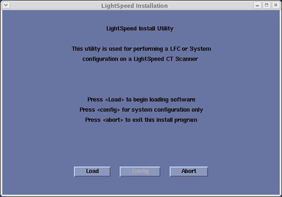
Click [Load] . A prompt message appears asking if you wish to load the INFO file from the System State DVD.
If you have a System State DVD, select [YES] . When prompted, ensure the System State DVD is in the DVD drive in the Peripheral Tower (on top of the console) and then select [OK] . If you do not have a System State, select [No] .
Click the [System] button.
See example, below.
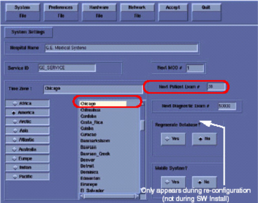
Verify that the Next Patient Exam # on the System Settings screen is either the value restored from Save System State, else = 1.
Verify that the proper Time Zone is selected (example: Chicago).
Click the [Preferences] button.
See example, below.
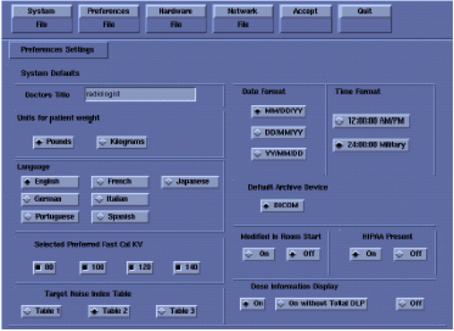
Select the units for patient weight: ( [Pounds] or [Kilograms] ).
Select Language: ( [English] or [other] ). See Notice in Section 3.17.
Select Preferred FastCal KV - select the kV to be calibrated during FastCal. (Default selections are [120] and [140] ). These kVs should include all kVs that the site uses for patient scanning.
Select Target Noise Index Table: default is [TABLE 2] .
Verify proper Date Format is selected (Example: [MM/DD/YY] ).
Verify proper Time Format is selected (Example: [24:00:00 Military] ).
Default Archive Device: add your device here (Example: [DICOM] .)
Verify Modified in Room Start is set to [Off] .
Set HIPAA Present to [OFF] unless the customer requests HIPAA to be on.
Select the site preferred Dose Information Display option for the site to use in monitoring calculated Patient Dose:
Select [ON] (full CTDiw Display)
Select [ON WITHOUT TOTAL DLP] (no Dose Length Product Display), or
Select [OFF] (no CTDIw Display)
| NOTE: | A scroll bar below this menu may be present. It contains the System Information from the INFO file System State. |
Click the [Hardware] button.
An example Hardware Settings screen is shown below (the Hardware Settings screen is different for each system).
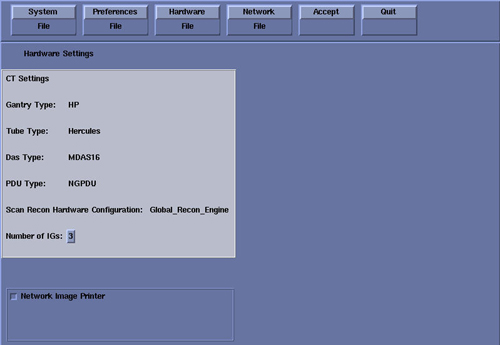
Refer to Table 1 to verify: DAS Type, Tube Type, PDU Type, and Gantry Type. If not correct, click the [Hardware Parameters Selection] button then select the correct system configuration from the displayed list. For additional information, refer to Hardware Parameters Selection.
| NOTE: | NOTICE: Scanning with the wrong Tube Type will damage
the tube! Before continuing, verify the Tube Type is correct per
Table 1. (User Hint: Click the link above, to open the table in a new browser window.) |
On the Hardware Settings screen, set the Number of IGs to match your system.
Verify Scan Recon Hardware Configuration: [GLOBAL RECON ENGINE] .
Check the Network Image Printer selection ONLY if the system has an active network printer (“active” means the printer is installed, cabled, and powered ON). If the printer is not active, the software install will fail.
Click the [Network] button.
See an example Network Settings Screen, below (your site will be different).
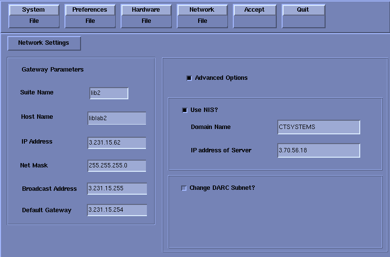
Select the Suite Name: add your name here (Example: lib2).
| NOTE: | The Suite Name must start with a letter, followed by 3 alphanumeric characters. Total must be four characters long. The name of the OC interface is <Suite Name>_oc within the scanner's subnet. It is suggested that you choose CT01 as its name, unless a different Suite Name is required. |
Select the Host Name: add your host name here (Example: liblab2).
| NOTE: | The Host Name identifies the hostname and AE
Title of the scanner. It:
|
Set the IP Address: add your address here (Example: 3.57.255.55).
If the IP Address starts with 172.xx.xx.xx, then check the Change DARC Subnet? box and enter the following value: 169.254.0
Set the Netmask: add your address here (Example: 255.255.252.0).
Set the Broadcast Address: add your address here (Example: 3.57.255.255).
Set the Default Gateway: add your address here (Example: 3.57.252.254).
If there is an Internal Option - Internal Subnet setting displayed and checked, then un-check it. (This option might not appear on your system.)
Verify with customer’s network administrator if they have NIS. If they do, ensure the [ADVANCED OPTIONS] and [USE NIS] boxes are checked. If they don’t, ensure these selections are not checked.
Enter Domain Name: add your name here (get name from customer’s network administrator) (Example: CTSYSTEMS.)
Enter the IP Address of Internal Server: add your IP address here (get IP address from customer’s network administrator) (Example: 3.70.56.18).
Click the [ACCEPT] button at the right corner of the User Interface.
An Install INFO pop-up box is displayed.
See the following illustration, for a typical Install INFO message (the Install INFO message is different for each system configuration).
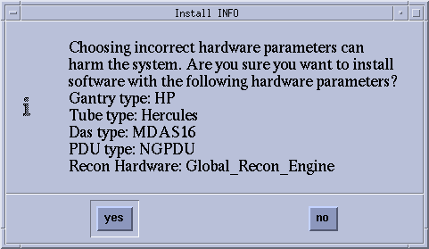
If the information is correct, click the [Yes] button.
| NOTE: | If the information is not correct, click the [No] button. This returns you to the Hardware screen. Click the [HARDWARE PARAMETERS SELECTION] button and select the correct system configuration from the displayed list. For additional information, refer to Hardware Parameters Selection. Click the [Accept] button again, followed by the [Yes] button on the Install INFO pop-up to accept the new hardware configuration. |
The following pop-up message appears: Please make sure the CT Application SW is in the drive - the system will be rebooted. Ignore this message.
| NOTE: | Do not remove the Application Disk #2 from the HP Host Computer until instructed to do so. |
As the system reboots, the following Winterm window message appears: Starting LFW procedure (~13 minutes to load). A shell Installation screen appears and the application software starts loading.
| NOTE: | NEVER Use <CTRL - ALT - DELETE> to reboot the host computer. This technique will NOT reboot all console subsystems, and as such is an unacceptable practice. |
When the system prompts you to reboot (after approximately 13 minutes), answer [Yes] . The system is going down for reboot NOW.
After approximately five (5) minutes, a pink pop-up box appears, stating CT Software Auto-Start Disabled. In this box, click [OK] .
Press the button on the DVD ROM drive to remove the Application Disk #2 CD-ROM from the HP Host Computer.
Table 1: DAS, Tube, PDU, and Gantry Type Selections
| SYSTEM | DAS | TUBE | PDU | GANTRY |
| LightSpeed 1.X | SDAS | MX_2000CT | CT COMPACT | H1 |
| LightSpeed 2.X | SDAS | MX_2000CT | CT COMPACT | H2 |
| LightSpeed 3.X | MDAS4 or MDAS8 | MX_2000CT | CT COMPACT or NGPDU | H2 |
| LightSpeed 4.X (H16) | MDAS16 | Performix | CT COMPACT | H2 |
| LightSpeed 5.X Pro16 (100kW) (HP100) | GDAS16 or MDAS16 | Hercules | NGPDU | HP |
| LightSpeed 5.X Pro16 (80kW) (HP80) | GDAS16 or MDAS16 | OEM | NGPDU | HP |
Confirm the Xtream Host Computer Software has loaded:
Open a Unix Shell.
Type: swhwinfo<Enter>, to view the Software and Hardware Config information that will confirm that software has loaded correctly.
Confirm that the swhwinfo results match the software revision shown on the Applications Disk.
If the revisions match, continue with this procedure.
If the revisions do NOT match, reload the software (Section 3.5).
Type: cat /GEHC*
Confirm that the cat results match the Operating System version and Software Build Date shown on the OS and Applications Disks.
| NOTE: | If the time and date is already correct, skip this procedure. Otherwise, you must set the date and time on the Host Computer. |
With Application Software down, enter the time and date if needed.
If Applications are up, select the [Service Desktop] icon, [Utilities] , then [Application shutdown] .
Open a Unix shell.
Type: su -<Enter>.
Type the root password: #bigguy and press <Enter>.
Type: setdatemmddhhmmyyyy (e.g.: setdate 050409002003) and press <Enter>.
| NOTE: | Alternate method exists: You may also type: setdate<Enter> and you will be prompted through the individual entries. Where:
|
The setdate program will set and display the time and date for on the Host Computer. Verify the date and time on the Host Computer is correct.
To exit the root session, Type: exit<Enter>.
Slide the computer tray back into position, properly secure it, and replace the console’s front cover.
Customers have the option to have their scanner synchronize the date and time with the hospitals network. If your customer so chooses proceed with this section otherwise proceed to Section 3.5.6.
Obtain a “Network Time Protocol” (NTP) IP Address from the Hospital IT team.
Open a Unix Shell
Login as root
Type: su – <Enter>
Password#bigguy
Type: dateconfig.
A GUI will appear, similar to that shown below.
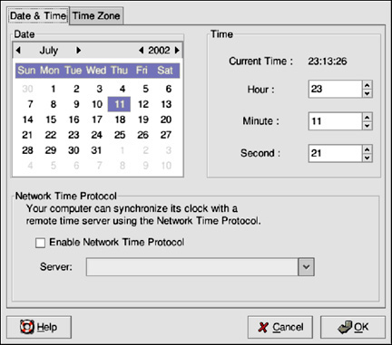
To change the date, use the arrows to the left and right of the month to change the month. Use the arrows to the left and right of the year to change the year, and click on the day of the week to change the day of the week.
Click the [OK] button.
To change the time, use the up and down arrow buttons beside the Hour, Minute, and Second in the Time section. Changes will not take place until you click the [OK] button.
| NOTE: | Changing the date and time will change the system clock as well as the hardware clock. |
Click the [Enable Network Time Protocol] button
Click the [OK] button
Type the Network Time Protocol (NTP) IP Address obtained in Step 1, above, into the Server field.
Click the [OK] button
| NOTE: | The next step has the system synchronize with the NTP server on each reboot of the system |
Type: /sbin/chkconfig --level 345 ntpd on
| NOTE: | Once the final OK is entered, the time should immediately synchronize to GMT. If the time is way off, NTP will more gradually bring the time together. NTP works best when the system/scanner is not shut down for long periods of time. Reboots are OK. |
This section describes the steps necessary to change the BIOS on the DARC Node to enable a LFC. This step is required to load the OS onto DARC from the PC.
| NOTE: | Be patient. Telnet response may be slow. |
Open a Terminal Window.
Logon as root:
su -
#bigguy
Type: telnet localhost 623 <Enter>.
At Server Prompt type: darc <Enter>.
At username, press <Enter>.
At password, press <Enter>.
At dpcdi> prompt type: reset –c
Interrupt the DARC boot process to enter the BIOS Setup mode. When the message “Press <F2> to enter setup” appears, press <F2>.
| NOTE: | There will be a short delay before the DARC BIOS setup screen is displayed. |

Select Boot Menu, using arrow keys.
Select Boot Device Priority Menu, then press <Enter>.

Select 1st Boot Device, then press <Enter>.
A small window will appear with the options available. Using the down-arrow key, scroll down to IBA 1.1.08 Slot 0338, then press <Enter>.
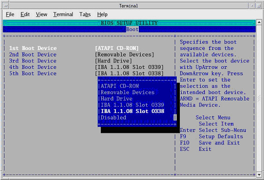
Using the down-arrow key, scroll down to the 2nd Boot Device entry. Press <Enter>.
A small window will appear with the options available. Using the down-arrow key, scroll down to the ATAPI CD-ROM entry. Press <Enter>.
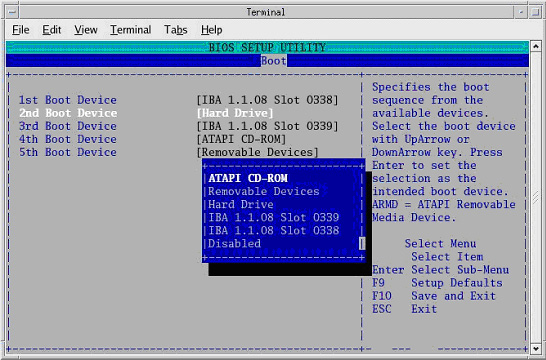
Using the down-arrow key, scroll down to the 3rd Boot Device entry. Press <Enter>.
A small window will appear with the options available. Using the down-arrow key, scroll down to the Hard Drive entry. Press <Enter>.
Verify the Boot device Priority is:
IBA 1.1.08 slot 0338
ATAPI CD-ROM
Hard Drive
IBA 1..08 slot 0339
Removable Devices
| NOTE: | The removable devices might not be present. This is OK. |
Press <Esc>.
Save DARC BIOS settings:
From Main menu, arrow to (move to) Exit.
Select Exit Saving Changes, and press <Enter>

Select [Yes], and press <Enter>, to “Save configuration changes and exit now.”
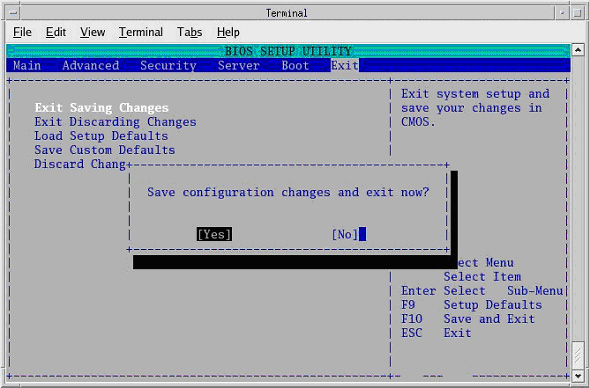
| NOTE: | After saving the DARC BIOS, the DARC BIOS Setup utility will exit and the DARC will begin to Reboot. |
Close the Terminal Window.
The OS Disk will be used again; however, this time it will be loaded onto the DARC Node. If any problems arise, verify the correct disk is installed.
| NOTE: | The DARC OS is loaded from the Host PC DVD-ROM Drive. |
Place OS DVD into the Host DVD-ROM Drive. (See Illustration, below.)
Open a Unix Shell.
Type the following:
ctuser:su -<ENTER>
password:#bigguy<ENTER>
root:cd /usr/g/scripts<ENTER>
root:./start_darcOS<Enter>
An Attention window appears. See the illustration below.
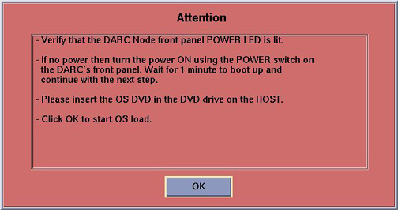
If the ./start_darcOS script does not work, verify the Global Recon Engine has been selected (see General Information).
Follow the instructions in the Attention window and then insert the OS Disk into the HP PC DVD Drive.
Click on [OK] . A sh window displays initial information, followed by a series of four rows of dots.
| NOTE: | The display of dots reflects the copy process from the host DVD drive to the DARC. This process takes approximately 15 minutes. |
Once the copy process is complete, the load will begin and the following message will appear:
The OS load on the DARC Node is started. This takes about 13 minutes. ##.## % done.
| NOTE: | The DARC OS Load will stop prematurely ONLY if an error is encountered. An Error Dialog Box will appear with a brief description of the error. Select OK after reading the instructions displayed on the Monitor. Refer to DARC OS Load Pop-Up Boxes for additional information on these error pop-up windows. Also, if any problems arise, verify the correct disk is installed. |
When the DARC OS load has completed, a pop-up message is displayed:
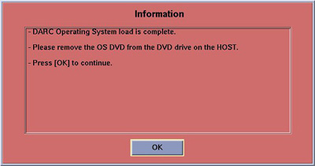
Click on [OK] .
The OS disk ejects automatically. Remove the OS disk from the drive and close the drive.
In upper left select [FILE] and close the shell (or you may use this for the next sub-section).
This completes the OS load on the DARC.
Next: load the DARC Applications in the HP Host Computer. See Section 3.5.8.
This section first verifies the DARC OS was successfully loaded. The DARC Applications CD-ROM will then be used and copied onto the HP Host Computer and then loaded onto the DARC Node. If any problems arise, verify that the correct CD is installed.
Insert the DARC Applications CD into the DVD drive on the HP Host Computer. See the illustration, below.
Open a Unix Shell and type the following:
ctuser:su -<Enter>
password:#bigguy<Enter>
Verify the DARC OS load was successful by logging into the DARC Node:
root:rsh darc<Enter>
[root@localhost root] (If the prompt is displayed exactly as shown, then the login was successful and the DARC OS was loaded properly.)
[root@localhost root]exit<Enter>
If login was successful, continue with DARC Apps load:
root:cd /<Enter>
root:mount /mnt/cdrom<Enter>
root:cd /mnt/cdrom<Enter>
root:./copy_rpms<Enter>
The following messages appear.
Copying darc rpms...
Please wait...
Done...
Type the following:
root:cd /<Enter>
root:umount /mnt/cdrom<Enter>
root:eject<Enter>
Remove the DARC Applications CD-ROM from the HP Host Computer DVD-ROM drive.
Type:
root:cd /usr/g/scripts<Enter>
root:./start_darc_load<Enter>
A shell window pops up and the load begins. A successful load takes 4-5 minutes.
Continue the procedure when the load window goes away.
| NOTE: | If the time to load the DARC apps is less than 1 minute (~30 seconds) then the copy rpms command was not entered successfully. |
Close the shell (do not use for the next process).
This section describes the steps necessary to change the BIOS on the DARC Node. This step is required to return the DARC BIOS to its original settings, now that the OS has been loaded onto the DARC from the PC.
| NOTE: | Be patient. Telnet response may be slow. |
Open a Terminal Window
Logon as root:
su -<Enter>
#bigguy<Enter>
Type: telnet localhost 623 <Enter>
At Server Prompt type: darc<Enter>
At username, press <Enter>
At password, press <Enter>
At dpcdi> prompt type: reset –c
Interrupt the DARC boot process to enter the BIOS Setup mode. When the message “Press <F2> to enter setup” appears, press <F2>
| NOTE: | There will be a short delay before the DARC BIOS setup screen is displayed. |
Select Boot Menu, using arrow keys.
Select Boot Device Priority Menu, then press <Enter>
Select 1st Boot Device, and press <Enter>.
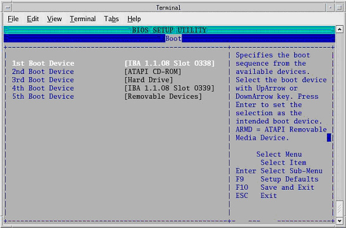
A small window will appear with the options available. Using the down-arrow key, scroll down to the ATAPI CD-ROM entry. Press <Enter>.

Using the down-arrow key, scroll down to the 2nd Boot Device entry. Press <Enter>

Verify 2nd Boot Device is set to Hard Drive. If not, select Hard Drive now.
Using the down-arrow key, scroll down to the 3rd Boot Device entry. Press <Enter>
Select IBA 1.1.08 Slot 0339, then press <Enter>.
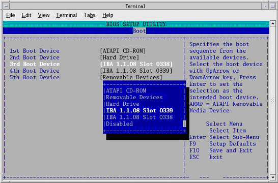
Verify the Boot device Priority is:
ATAPI CD-ROM
Hard Drive
IBA 1.1.08 slot 0339
IBA 1.1.08 slot 0338

Press <Esc>.
Save BIOS settings:
From Main menu, arrow to (move to) Exit.
Select Exit Saving Changes, and press <Enter>.
Select [Yes] , and press <Enter>, to “Save configuration changes and exit now.”
| NOTE: | After saving the DARC BIOS, the DARC BIOS Setup utility will exit and the DARC will begin to reboot. |
Close the Terminal Window.
| Never use <CTRL - ALT - DELETE> to reboot the host computer. This technique will NOT reboot all console subsystems, and as such is an unacceptable practice. | |
Open a Unix Shell.
Type: su -<Enter>
Enter the root password: #bigguy<Enter>
Type: sync<Enter>
Type: sync<Enter>
Type: reboot<Enter>
A message appears: The system is going down for reboot NOW!.
After approximately 4-5 minutes a pink pop up window appears with the message:
CT Software Auto-Start Disabled.
Click [OK] .
Open SHELLTOOL
Type: su -
Password: #bigguy<Enter>
Type: reconfig<Enter>
Select Network tab
Verify network settings
Click [Accept] button - do NOT [Quit] button.
Open SHELLTOOL
rsh darc
Type: swhwinfo<Enter>, to view the Software and Hardware Config information that will confirm that software has loaded correctly.
Confirm that the swhwinfo results match the software revision shown on the Applications Disk.
If the revisions match, continue with this procedure.
If the revisions do NOT match, reload the software (Section 3.5).
Type: cat /GEHC*
Confirm that the cat results match the Operating System version and Software Build Date shown on the OS and Applications Disks.
Start Service Desktop.
Select [Utilities/Tools] , [Utilities] , then [Application Shutdown] .
Insert Tube Usage patch CD into Host PC DVD drive.
Open a Unix Shell.
Log in:
su -<Enter>
Password:#bigguy<Enter>
Type:
mount /mnt/cdrom<Enter>
cd /mnt/cdrom<Enter>
./install_patch -p TUBEUSAGE_PATCH-1-1.i386.rpm<Enter>
The following will appear onscreen:
******PRE-INSTALL******
Checking for the software and operating system version.
******PRE-INSTALL******
******INSTALL******
Installing TUBEUSAGE_PATCH-1-1
########################################### [100%]
########################################### [100%]
******INSTALL******
******POST-INSTALL******
No post-install activity required
******POST-INSTALL******
Type:
cd /<Enter>
umount /mnt/cdrom<Enter>
Manually eject the CD, and remove it from the Host PC.
Type: sync<Enter.>
Type: sync<Enter.>
Type: reboot<Enter.>
When the Host Computer is up, open a Unix shell (window).
Type: st<Enter> or startup<Enter>.
A pink pop-up Attention Message appears: OC initializing. Please wait….
| NOTE: | After the INITIAL Load From Cold, the IG needs to be powered on. This is only if the IG has never been involved in a LFC. The IG power is normally on later in the Host Computer initializing message and before the IG coming up message box. The IG Node is turned on during the RESETTING message (displayed on the right Display Monitor message box located below the Service and Shutdown Icon). |
| NOTE: | If a message concerning incorrect DAS configuration is encountered, review the Error Log for the Card List issue. Select from the following two methods to alleviate this issue: Flash Download Update or Power OFF the Axial Drive and HVDC at the Gantry service panel - turn OFF DAS Power for 1 minute - turn DAS Power back ON - turn Axial Drive and HVDC at the Gantry service panel back ON - Flash Download Update - verify error message has disappeared. If error message reappears then Troubleshoot. |
Click [OK] as needed to answer message prompts.
If any Recon Selftest Failures are encountered, review the error log.
To configure user's HIPAA access, refer to LightSpeed Series Learning and Reference Guide, 2369740-247, Revision 6, dated 05/05, page 3-25 through 3-50.
| NOTE: | This procedure is ONLY for upgrade sites with System State Information on a MOD (not a DVD). |
When applications are up, open a Unix Shell from the Service Desktop:
Type: whoami<Enter>. The system should respond ctuser.
Insert the Irix System State MOD into the tower MOD drive. The DVD drive should be empty.
Execute the following commands as ctuser.
cd /usr/g/bin<Enter>
sysstategui -MOD -IRX2LNX<Enter>
When the system state GUI comes up, select and restore each item individually, by selecting the item and then selecting [RESTORE] .
| NOTE: | Continue until all items are restored. |
The Irix to Linux conversion should take around 40 minutes. The command lines will scroll very quickly during the conversion in the window. When the scrolling stops, the system state has completed the conversion. When it has completed, close the window.
Shutdown Applications.
In a Unix shell, type: gettubeusagedata<Enter>.
If this command fails to execute, refer to Manual Commands for gettubeusagedata.
Close the Unix shell.
Remove the MOD from the drive.
Restart Applications.
Continue with Section 3.15.
Insert the Save System State DVD into DVD RAM Peripheral Tower drive.
Select: [SERVICE DESKTOP] .
| NOTE: | If the Service Key is installed, press the (1), (2), (3) keys in order to proceed. |
Select: [UTILITIES] .
Select: [SYSTEM STATE] .
Click the [ALL] selection, which highlights the cals, characterization, etc.
Click [RESTORE] .
Verify the overall system state content has restored correctly (look for message “Save/Restore System State Completed Successfully”), then select [CANCEL] .
When completed, select [DISMISS] or close the window.
Shut down Applications.
Type:
rm -rf /tmp/*bb<Enter>.
/usr/g/bin/SwapTubeData -c<Enter>.
/bin/cp -f /tmp/*bb /usr/g/service/.bb/<Enter>.
Restart Applications.
| NOTE: | If Scan Hardware Reset question appears - answer [NO] . This reset is performed during FLASH Download Update. |
This patch fixes an issue with small font sizes viewed in Common Service Desktop, restoring them to legible font sizes. A change in PC operating system (e.g., Linux 1.7.10 to Linux 4.3.13) makes this change applicable.
This patch should only be installed when upgrading the software on an existing GRE/Xtream console to Release 05MW14.5.
Install this patch ONLY IF:
Upgrading GOC3 GRE/Xtream Console to SW Release 05MW14.5
Upgrading GOC4 GRE/Xtream Console to SW Release 05MW14.5
Upgrading GOC2/Linux-Pegasus Console to GRE/Xtream with SW Release 05MW14.5
Do NOT install this patch if:
Reloading SW Release 05MW14.5
Upgrading from a GOC1 (IRIX) Console to a GRE/Xtream Console
If applicable, Shutdown Applications from the Netscape: Service Desktop:
Click on the Service Desktop Icon
1, 2, 3 as required
Click on Utilities/Tools, Utilities
Click on Application Shutdown from the menu
Insert the IIP Upgrade Patch CD-ROM into the DVD ROM drive on the HP Host Computer.
When Application Software is down, open a Unix Shell.
Type the following:
ctuser@hostnamesu – <Enter>
Password#bigguy<Enter>
hostname#mount /mnt/cdrom<Enter>
hostname#cd /mnt/cdrom<Enter>
hostname#/install_patch -p IIP_UPGRADE_PATCH-1-1.i386.rpm<Enter>
The following output should appear in the window:
******INSTALL******
Installing IIP_UPGRADE_PATCH-1-1
/usr/g/ctuser/iip_3.3.4_ct_restore_patch.tar file does not exists
########################################### [100%]
########################################### [100%]
Checking if core compressed files exist ...
Checking if Insite Home [/usr/g/insite] exists...
Copying tarball ./pf_post_restore_files.tar.gz to /usr/g/insite
`./pf_post_restore_files.tar.gz' -> `/usr/g/insite/pf_post_restore_files.tar.gz'
Uncompressing files ..
Cleaning previous browser profiles
Cleaning up unnecessary stuff
Re-installing web server
###
# Finished.
###
******INSTALL******
******POST-INSTALL******
No post-install activity required
******POST-INSTALL******
hostname#cd /<Enter>
hostname#umount /mnt/cdrom<Enter>
Manually eject the CD.
Remove IIP Upgrade Patch CD-ROM from the DVD-ROM drive on the HP Host Computer.
Reboot, before starting Applications Software.
Type the following:
hostname#sync<Enter>
hostname#sync<Enter>
hostname#reboot<Enter>
The following message appears:
The system is going down for reboot NOW!
Installation of IIP Upgrade Patch process is complete.
The Reconstruction (not Scan) portion of the system can be tested at this point.
Click on the [RETRO RECON] selection on the left Monitor.
Click the rat gold series.
Click [SELECT SERIES] .
Click on [CONFIRM] .
Verify the image(s) reconstruct and are displayed.
Click on [QUIT] .
Select the [SERVICE DESKTOP] .
Select in sequence: UTILITIES → INSTALL → FLASH DOWNLOAD.
Click [UPDATE] . Ignore any initial errors.
When then Flash Download process is complete, select [DISMISS] or close the window.

If there are any issues with the install, verify the reset switch at the gantry is not flashing and reset the 120 VAC, if necessary. Also, try to ping the following (press <Ctrl-C> and close the shell when finished pinging):
(For LightSpeed 4.X)
ping obcr<Enter>
ping etc<Enter>
ping stc<Enter>
(For LightSpeed 5.X Pro16 (100kW) and Pro16 (80kW))
ping orp<Enter>
ping stc<Enter> -OR- ping tgp<Enter>
| For DMPR and Variviewer: DMPR and Variviewer are mutually exclusive options with 05MW14.5 software. If you have DMPR, software will not allow you to install Variviewer, and vice-versa. For example, do not install Variviewer, if you plan to load DMPR. | |
| For Perfusion and Denta Scan: For systems where CT Perfusion (e.g., CT Perfusion 2) or Denta Scan is included in Available Options, perform this Install Options procedure in the English language environment. (The LFC can be performed in other language environment than English.) Otherwise, the LFC procedure is possible to fail, or if you change the language setting after installing CT Perfusion or Denta Scan, this software option will not work; you will not even be able to start the program. | |
There are three additional options that may be installed. The order
of installation is critical to proper operation. When loading any of the following
software options, make certain to install them in the order listed below:
| |
Insert the Options DVD in the Peripheral Tower DVD RAM drive.
With the Applications up, select the [SERVICE DESKTOP] .
Select [CONFIGURATION] .
Select [INSTALL] .
| NOTE: | LS5.X and later products do not have an “Install” folder under the “Configuration” tab. Skip this step and go to the next step. |
Select [INSTALL OPTIONS] . A blank Software Options screen appears:

Click [INSTALL] . A Select Mechanism window opens (see illustration, below). Select the mechanism through which you want to install Option Keys.

Click Permanent. A Select Device window opens (see illustration, below). Select the mechanism through which you want to install the Permanent Option Keys.

Click the [MEDIA] button and insert the Options DVD or MOD.
Click [OK] . Available options appear on the Software Options screen.

Pick options one at a time from the Available Options list and click on [INSTALL] to update each selection and place it on the Installed Options List.
When the process is complete, click [Quit] then [Quit] to close the window.
| NOTE: | Software release 05MW14.5 requires the following work-around to restore tube usage information. It must be executed for IRIX and Linux-based host consoles. |
Open a Unix shell
Type: rm -rf /usr/g/service/ScanUsage
Select: Service Desktop → Utilities → Application Shutdown.
If upgrading a GOC1 (IRIX) Console to a GRE/Xtream Console, then the gantry revolutions information must be restored.
Open a Unix shell.
Type: getStats
Select menu option (by typing the appropriate number) to Update Gantry Revolutions Counter Stats.
Enter the gantry revolutions counter information captured at the beginning of this LFC (Section 3.2.1).
| NEVER Use [CTRL - ALT - DELETE] to reboot the host computer. This technique will NOT reboot all console subsystems, and as such is an unacceptable practice. | |
To restart the system:
Open a Unix shell and type: reboot<Enter>
Select [OK] as needed to answer messages. Note any Recon Failures.
Select the red [SHUTDOWN ICON] .
A set of options appears.
Select: [RESTART] then [OK] to shutdown and Restart the system.
When the system comes up the following screen will be displayed if HIPAA Present was set to On during the LOAD process. Verify the admin screen below has the following 'Select user':
Select user: admin
Password: ctAdmin
| ONLY load this Patch on Pro16 systems installed in China, with 05MW14.5
software or earlier. All other Systems: Skip This Section (proceed to Section 3.22) | |
This patch is used to fix the air CT number shift in LightSpeed Pro16 systems. According to Chinese Regulatory Standards (YY-0310), the air CT number for CT scanners sold in China shall meet the specification of –1000 +/- 10 HU. Most of LightSpeed Pro16 systems either in China installed base (IB) or currently manufactured may not meet this standard.
To fix the problem, the patch re-scales pcal vectors and adjusts beam hardening coefficients for each kv, slice mode, bowtie filter and focal spot in the calibration database. Air CT number computed using these re-scaled vectors will meet the specification of –1000 +/- 10 HU.
The patch must be run every time a detailed calibration (including Auto CT Number Adjust) is done. However, the pcal vectors can only be re-scaled once between two consecutive detailed calibrations. To prevent multiple re-scaling, a “touch” file is generated in /usr/g/cal_db when this patch is run. During the next installation, the system will compare the time stamp of the calibration vectors to the time stamp of the “touch” file, to decide whether the patch should be run --- only if the time stamp of cal vectors is newer than the time stamp of the “touch” file, the re-scale is allowed.
System Installed in China that are Pro 16 systems with 05MW14.5 software or earlier.
| The Install of this Patch is Mandatory to meet Chinese regulatory standards (YY-0310). | |
Before loading this patch, ensure (05MW14.5) software release Q2 2005 Software Set is installed. Otherwise, load the 05MW14.5 before installing this patch.
(For manufacturing) If the detailed calibration is completed and system states have been saved, please skip this step and go to step 3
(For installed base) If this is the first time loading the Patch, please perform the following detailed calibration procedures:
Z-Slope calibration
DAS Gain calibration
Collimator calibration
Detailed calibration
Auto CT number adjust
Save the system states into System States DVD.
Shutdown the application: Service Desktop → Utilities → Application Shutdown
Open the front cover of the console so that the HOST computer is accessible.
Insert “Pro CT Numberfix” patch CD into DVD drive in the HOST computer.
Open a Unix Shell.
In the Open Unix Shell, Login as a super user:
Type: su –<Enter>
Type <super user’s password><Enter>
After Login as a super user, at the same Unix Shell:
Type: mount /mnt/cdrom<Enter>
Type: cd /mnt/cdrom<Enter>
Type: ./install_patch –p Pro_CTNum_Fix-1-1.i386.rpm <Enter>
It takes about 20 minutes for the installation to be completed.
In the Open Unix Shell:
Type: ./uninstall_patch<Enter>
Select the number associated with this patch: Pro_CTNum_Fix-1-1
Type: cd /usr/g/ctuser<Enter>
Type: umount /mnt/cdrom<Enter>
Type: exit<Enter>
Eject the Patch CD.
To restart the application, in the Open Unix Shell, Type: st<Enter>.
Once application is reloaded, perform an air-only scan using the following protocol, and then measure the air CT number:
120kV, 100mA, 1.0s, 16x0.625mm/16i, large SFOV, 50cm DFOV, standard filter
Measure air CT number using a default size circular ROI at the center of each image.
Air CT number should be within: -1000 +/- 10
Scan water section (QA3) of a centered 20cm QA phantom and measure the water CT number:
120kV, 440mA, 1.0s, 16x0.625mm/16i, small SFOV, 25cm DFOV, standard filter
Measure water CT number using a default size circular ROI at the center of each image.
Water CT number should be within: 0 +/- 5
If either one of above two scans fails the specified CT number range or the scan “resume” due to calibration file error, restore the system states from System States DVD, and the system should go back to the state prior to the patch installation.
If both scans pass the specified range of CT Number for air and water, save the systems states into System States DVD.
| ONLY load this Patch on RT systems installed in China, with 05MW14.5
software or earlier. All other Systems: Skip This Section (proceed to Section 3.23) | |
This patch is used to fix the air CT number shift in LightSpeed Pro16 systems. According to Chinese Regulatory Standards (YY-0310), the air CT number for CT scanners sold in China shall meet the specification of –1000 +/- 10 HU. Most of LightSpeed Pro16 systems either in China installed base (IB) or currently manufactured may not meet this standard.
To fix the problem, the patch re-scales pcal vectors and adjusts beam hardening coefficients for each kv, slice mode, bowtie filter and focal spot in the calibration database. Air CT number computed using these rescaled vectors will meet the specification of –1000 +/- 10 HU.
The patch must be run every time a detailed calibration (including Auto CT Number Adjust) is done. However, the pcal vectors can only be re-scaled once between two consecutive detailed calibrations. To prevent multiple re-scaling, a “touch” file is generated in /usr/g/cal_db when this patch is run. During the next installation, the system will compare the time stamp of the calibration vectors to the time stamp of the “touch” file, to decide whether the patch should be run --- only if the time stamp of cal vectors is newer than the time stamp of the “touch” file, the re-scale is allowed.
System Installed in China that are LightSpeed RT systems with 05MW14.5 software or earlier.
| The Install of this Patch is Mandatory to meet Chinese regulatory standards (YY-0310). | |
Before loading this patch, please make sure the software is ensure (05MW14.5) software release Q2 2005 Software Set is installed. Otherwise, load the 05MW14.5 before installing this patch.
(For manufacturing) If the detailed calibration is completed and system states have been saved, please skip this step and go to step 3
(For installed base) If this is the first time loading the Patch, please perform the following detailed calibration procedures:
Z-Slope calibration
DAS Gain calibration
Collimator calibration
Detailed calibration
Auto CT number adjust
Save the system states into System States DVD.
Shutdown the application: Service Desktop → Utilities → Application Shutdown
Open the front cover of the console so that the HOST computer is accessible.
Insert “RT CT Numberfix” patch CD into DVD drive in the HOST computer.
Open a Unix Shell.
In the Open Unix Shell, login as a super user:
Type: su –<Enter>
Type <super user’s password><Enter>
After login as a super user, at the same Unix Shell:
Type: mount /mnt/cdrom<Enter>
Type: cd /mnt/cdrom<Enter>
Type: ./install_patch –p RT_CTNum_Fix-1-1.i386.rpm <Enter>
It takes about 15 minutes for the installation to be completed.
In the Open Unix Shell:
Type: ./uninstall_patch<Enter>
Select the number associated with this patch: RT_CTNum_Fix-1-1
Type: cd /usr/g/ctuser<Enter>
Type: umount /mnt/cdrom <Enter>
Type: exit <Enter>
Eject the Patch CD.
In the Open Unix Shell, type: st <Enter>
Once the application is reloaded, perform an air-only scan using the following protocol, and then measure the air CT number:
120kV, 100mA, 1.0s, 4x1.25mm/4i, large SFOV, 50cm DFOV, standard filter
Measure air CT number using a default size circular ROI at the center of each image.
Air CT number should be within: -1000 +/- 10
Scan water section (QA3) of a centered 20cm QA phantom and measure the water CT number:
120kV, 260mA, 1.0s, 4x1.25mm/4i, small SFOV, 25cm DFOV, standard filter
Measure water CT number using a default size circular ROI at the center of each image.
Water CT number should be within: 0 +/- 5.
If either one of above two scans fails the specified CT number range or the scan “resume” due to calibration file error, restore the system states from System States DVD, and the system should go back to the state prior to the patch installation.
If both scans pass the specified range of CT Number for air and water, save the systems states into System States DVD.
Insert a new Save System State DVD labeled “05MW14.5 Q2 2005 With CT Number Fix for Air” into the DVD tower drive.
Select: [SERVICE DESKTOP] .
If reloading software, select: [UTILITIES] . If upgrading from earlier version software, select: [PM] .
Select: [SYSTEM STATE] .
Click [ALL] to select all the cals, characterizations, etc.
Click [SAVE] .
If applicable, click [OK] when the following message appears: System State Media Status: Please insert a DVD or MOD into the drive and press Save again.
When completed select [DISMISS] .
Save all reformat / recon protocols.
Close the Service Desktop window in the upper left corner of the screen.
Sites performing the next sub-section should not remove the DVD from the Peripheral Tower DVD RAM drive.
Successfully perform a Scout scan.
Successfully perform a Helical scan.
Successfully perform an Axial scan.
Software Load Process is now complete.
Return to the Flowchart/Steering Guide to complete the installation.